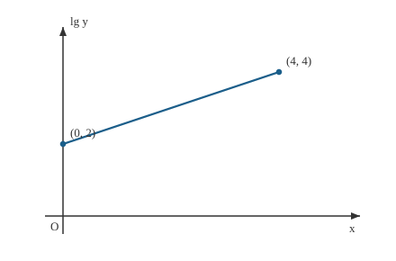
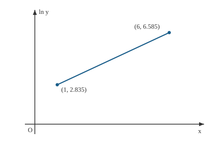

<script src="/assets/redirect.js"></script>
<section class="theory" data-section="P23-2.8">
<h2>2.8 Transforming a relationship to linear form</h2>
<p class="src">Based on Cambridge International AS &amp; A Level Mathematics: Pure Mathematics 2 &amp; 3 Coursebook, Chapter 2, printed pp.44–49 (reducing \(y=Ab^x\) or \(y=Ae^{px}\) to a straight line by taking logarithms). Printed pages were read from P23.pdf (printed 44–49 = PDF 56–61). Own wording and new numbers.</p>
<p class="key-words"><strong>Key words:</strong> <em>linear form</em></p>
<p>A relationship such as \(y=A\times 10^{px}\) or \(y=Ae^{px}\) is not linear in \(x\) and \(y\), but it can be rewritten in <strong>linear form</strong> by taking logarithms. If \(y=A\times 10^{px}\), then \(\lg y=\lg A+px\), so a graph of \(\lg y\) against \(x\) is a straight line with gradient \(p\) and intercept \(\lg A\). If \(y=Ae^{px}\), then \(\ln y=\ln A+px\), so a graph of \(\ln y\) against \(x\) has gradient \(p\) and intercept \(\ln A\).</p>
<figure>

<figcaption>The intercept 2 means \(\lg A=2\), so \(A=100\). The gradient is \(0.5\), so \(p=0.5\).</figcaption>
</figure>
<figure>

<figcaption>If \(y=Ae^{px+p}\), then \(\ln y=\ln A+px+p\). The gradient of this official line is 0.75, and substituting a given point gives \(\ln A=1.335\), so \(A=3.8\).</figcaption>
</figure>
<div class="worked-example">
<h4>Worked example 1</h4>
<p class="src">Book: intercept work on printed pp.44–46. New numbers.</p>
<p>The variables \(x\) and \(y\) satisfy \(y=A\times 10^{px}\). The graph of \(\lg y\) against \(x\) is a straight line passing through the point \((0, 2)\). Find \(A\).</p>
<ol class="steps">
<li>When \(x=0\), \(\lg y=\lg A=2\), so \(A=10^2=100\). <span class="mark">A1</span></li>
</ol>
<p class="final"><strong>Answer:</strong> \(A=100\)</p>
</div>
<div class="worked-example">
<h4>Worked example 2</h4>
<p class="src">Book: gradient work on printed pp.46–48. New numbers.</p>
<p>The graph of \(\ln y\) against \(x\) is a straight line passing through the points \((1, 2)\) and \((5, 10)\). Find the gradient of the line.</p>
<ol class="steps">
<li>The gradient is \((10-2)/(5-1)=2\). <span class="mark">A1</span></li>
</ol>
<p class="final"><strong>Answer:</strong> 2</p>
</div>
<h3>Common mistakes</h3>
<ul>
<li>Plotting \(y\) against \(x\) instead of \(\ln y\) or \(\lg y\) against \(x\), and then treating a curve as if it were already in linear form.</li>
<li>Taking the intercept as \(A\) rather than as \(\ln A\) or \(\lg A\).</li>
<li>Using common logarithms when the relationship is written with base \(e\), or the other way around, without adjusting the intercept.</li>
</ul>
<h3>Quick checks</h3>
<div class="quick-check" data-q="QC1">
<h4>Quick check 1</h4>
<p>The variables \(x\) and \(y\) satisfy \(y=A\times 10^{px}\). The graph of \(\lg y\) against \(x\) is a straight line passing through the point \((0, 2)\). What is the value of \(A\)?</p>
<details><summary>Worked solution</summary>
<ol class="steps">
<li>When \(x=0\), \(\lg y=\lg A=2\), so \(A=10^{2}=100\). <span class="mark">A1</span></li>
</ol>
<p class="final"><strong>Answer:</strong> \(100\)</p>
</details>
</div><div class="quick-check" data-q="QC2">
<h4>Quick check 2</h4>
<p>The graph of \(\ln y\) against \(x\) is a straight line passing through the points \((1, 2)\) and \((5, 10)\). What is the gradient of the line?</p>
<details><summary>Worked solution</summary>
<ol class="steps">
<li>The gradient is \((10-2)/(5-1)=2\). <span class="mark">A1</span></li>
</ol>
<p class="final"><strong>Answer:</strong> \(2\)</p>
</details>
</div><div class="quick-check" data-q="QC3">
<h4>Quick check 3</h4>
<p>The graph of \(\ln y\) against \(x\) is a straight line through \((2, 2.6)\) and \((6, 6.6)\). If \(y=Ae^{px}\), what is the value of \(p\)?</p>
<details><summary>Worked solution</summary>
<ol class="steps">
<li>Here \(p\) is the gradient: \((6.6-2.6)/(6-2)=1\). <span class="mark">A1</span></li>
</ol>
<p class="final"><strong>Answer:</strong> \(1\)</p>
</details>
</div>
</section>
